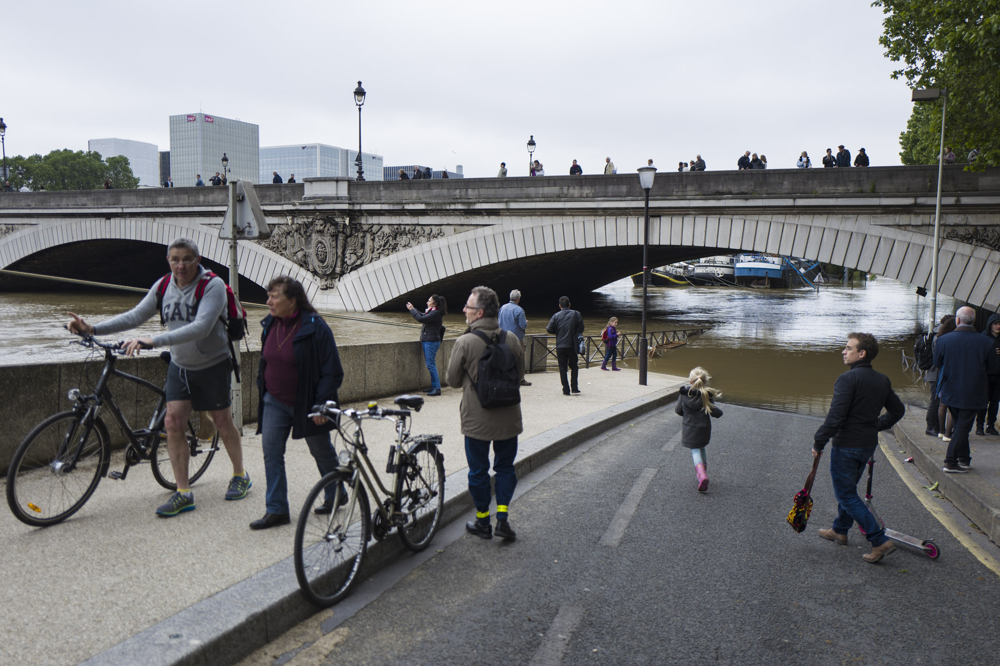
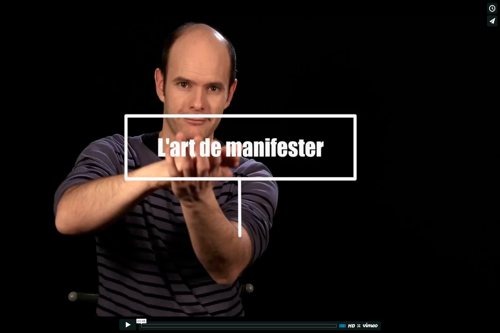
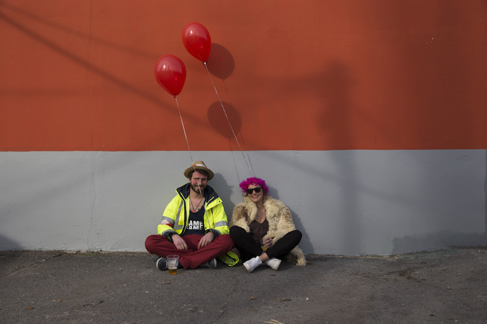
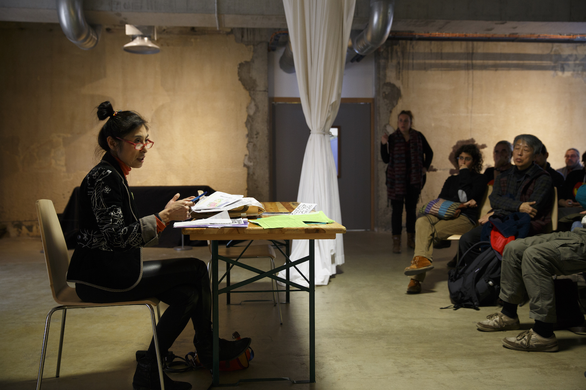
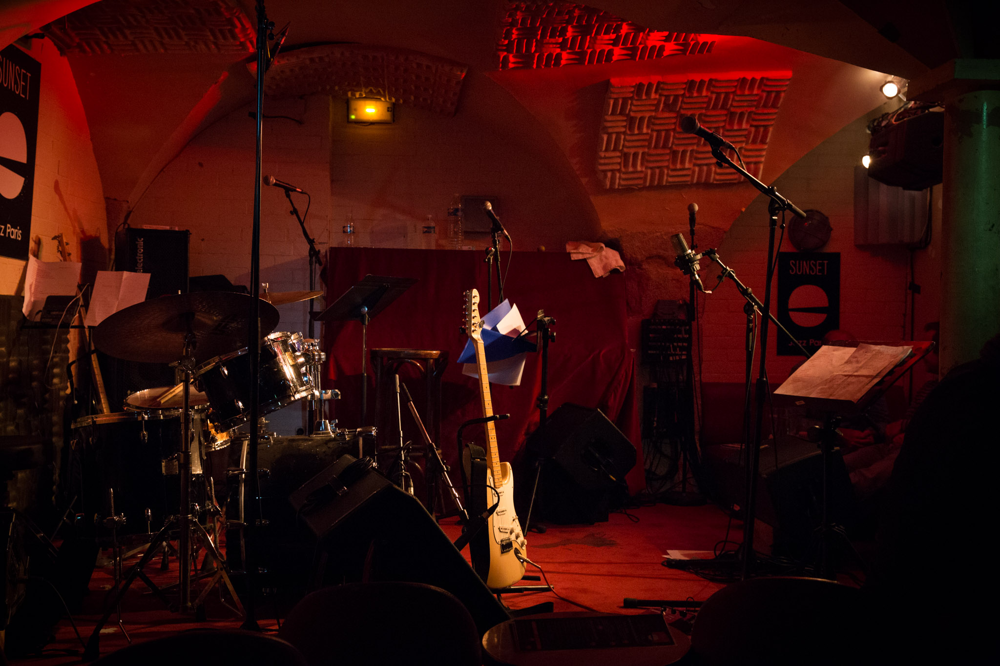

Avec un pic de crue qui devrait atteindre dans la journée du samedi 4 juin un maximum de 6,50m, la Seine est devenue l'attraction numéro un des touristes et des parisiens ainsi que des médias.
Quelques semaines dans la vie de la rédaction du journal Pèlerin au contact de ceux qui font cet hebdomadaire créé en 1873 et édité par le groupe de presse indépendant Bayard.

Quelle est la place de la manifestation aujourd’hui dans notre société ? Pourquoi certains continuent de descendre dans la rue, là où d’autres expérimentent de nouvelles formes d'engagements non-violents ? Etat des lieux de l'activisme en France avec Xavier Renou, fondateur du collectif des Désobéissants.

Pour sa huitième édition, le collectif OTTO10 s'installe à Noisy-le-sec et propose un nouveau "détournement" des soirées traditionnelles parisiennes intitulé "la Rélovution est en charme".
A la tête d’un groupement solidaire de restauratrices de peinture, Marie et son équipe ont démarré un chantier qui s’étalera sur quatre ans de restauration des fresques d’un des meilleurs élèves d’Ingres, Amaury Duval, dans l’église de Saint Germain-en-laye.
Parallèlement à la COP21, les espaces Générations Climat du 1er au 11 décembre 2015 sur le site du Bourget, ont été l'occasion de nombreux débats et conférences autour des enjeux climatiques et des solutions à apporter aux dérèglements climatiques actuels.
Ils ont pris la route pour un tour du monde pendant 6 mois, un an ou parfois plus. En quête de liberté ou tout simplement pour redonner du sens à leur vie, ils ont vécu leur rêve de découverte, de rencontres et de grands espaces… Mais que se passe-t-il au retour d’une telle expérience ?

La projection au CENTQUATRE à Paris du documentaire, Welcome to Fukushima, réalisé par Alain de Halleux, a été l’occasion pour l’auteur et militante anti-nucléaire Yûki Takahata de faire un point sur la situation dans la région.

20 ans l'âge de l'insouciance, l'âge des engagements, l'âge des choix. A 20 ans, Régis voulait réussir ses études tout en rêvant de devenir chanteur.